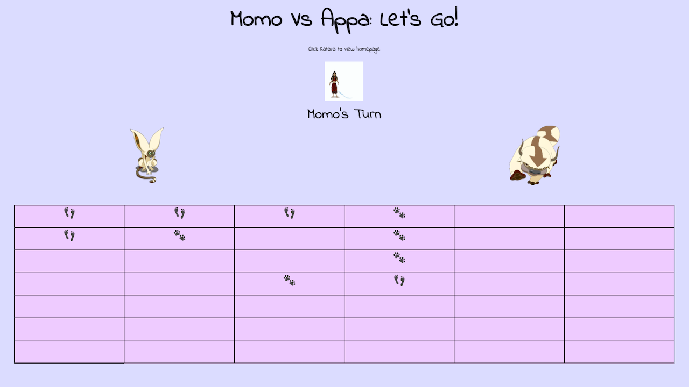
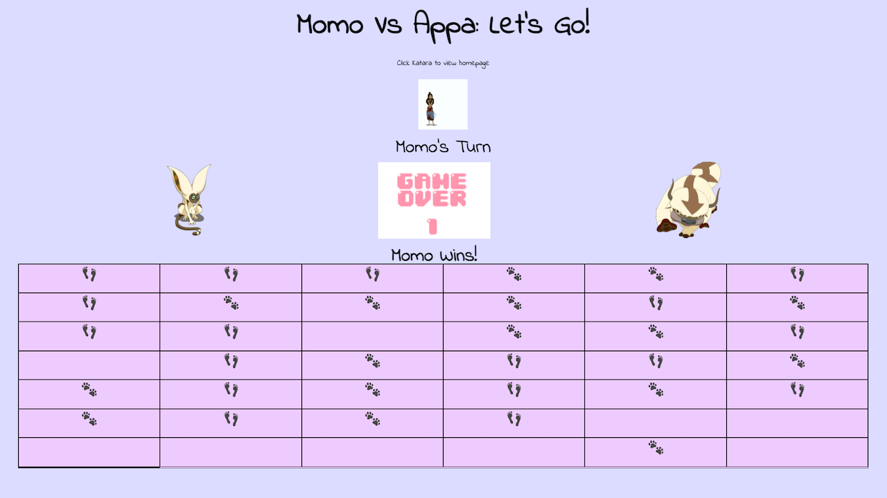

A 6 x 7 supergrid game with a fun "Avatar The Last Air Bender" design theme.

The Avatar Grid Game is my first coding project. Having a mere two weeks of coding instruction, I designed this interactive game using HTML, CSS, and Javascript.

This game includes a home page with detailed instructions on gameplay and how to win. It also includes a separate game page and allows for navigation back and forth between the home page and the game page. I chose the Avatar theme for my styling and background story because the show is a shared favorite between my child and me.
The most challenging bit of code was accurately writing the Javascript logic for the conditionals to check for a winner and disabling further gameplay once a winner has been determined. To ensure I included every possible winning combination, I drew out a grid on a piece of paper, highlighted and color-coded combinations according to direction, and then copied these spatial positions into my conditional statement. This project taught me the importance of whiteboarding and planning out my code, a skill I took with me into every subsequent homework and project assignment thereafter.
